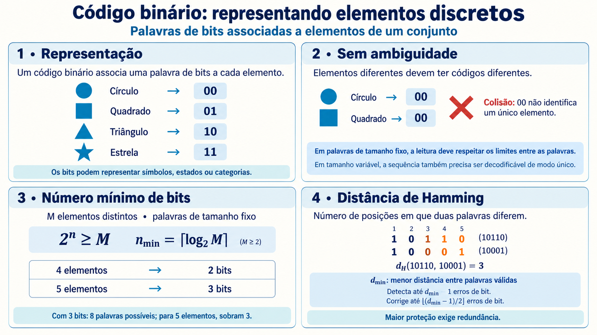
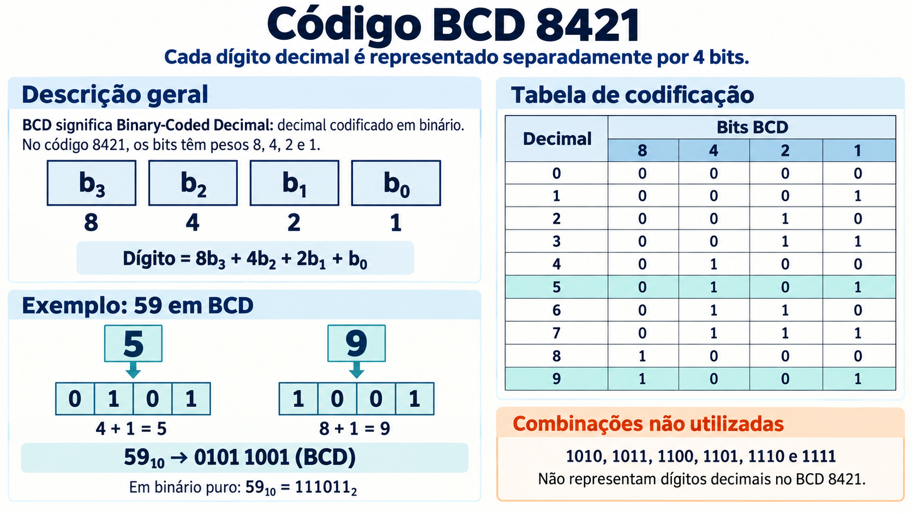
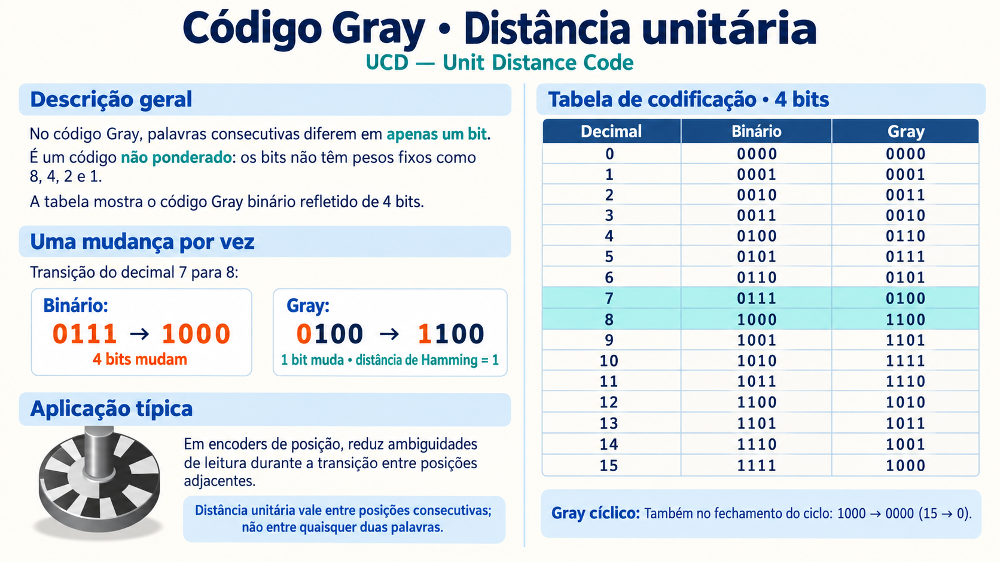
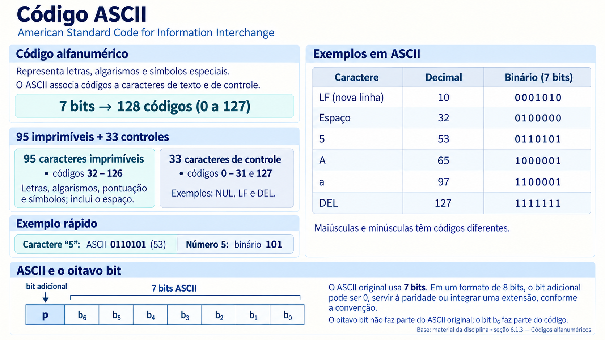
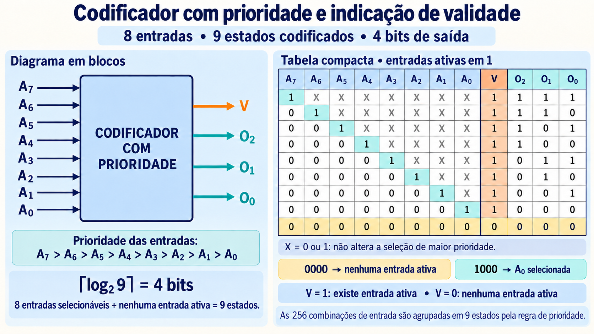
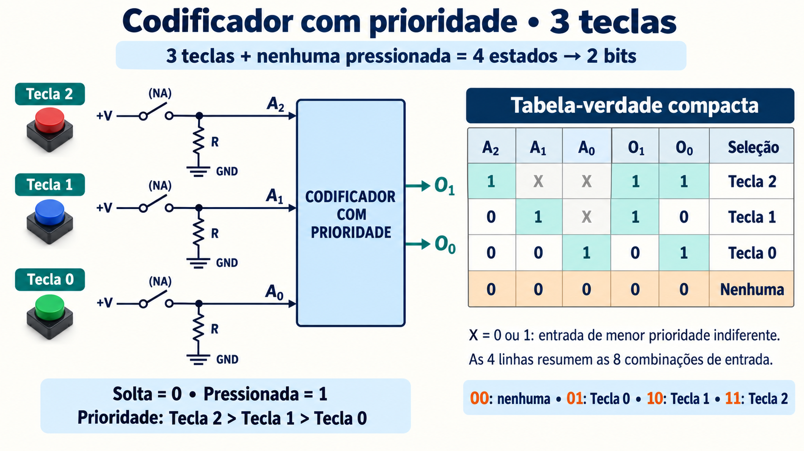
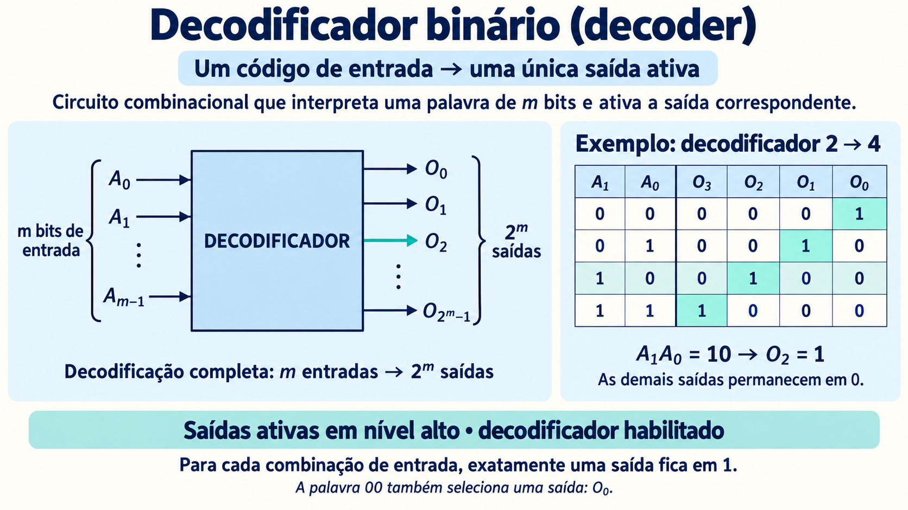
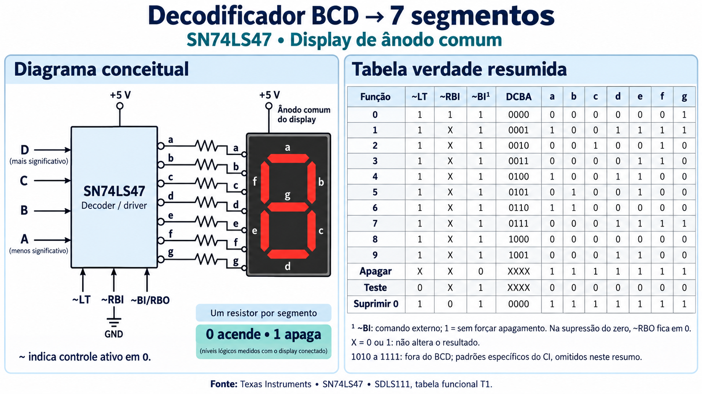
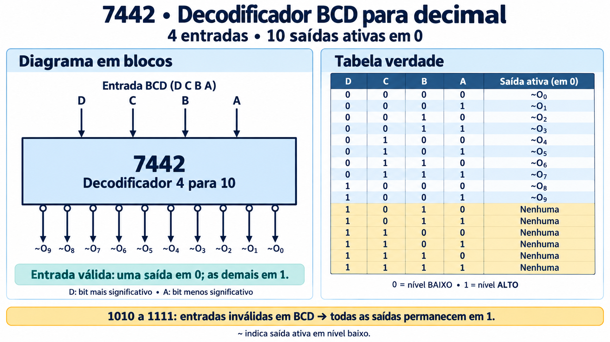
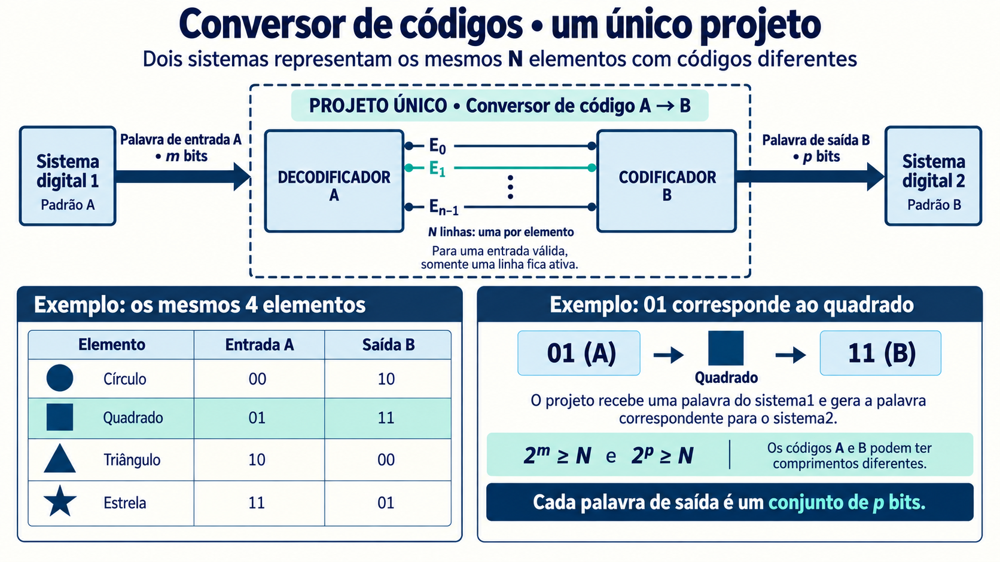

6.1 / Códigos binários
Códigos binários
Codificação binária é a associação de palavras de bits aos elementos de um conjunto discreto: dígitos, letras, teclas, posições de um eixo ou estados de um sistema. Os bits não carregam um significado por si mesmos: a interpretação depende do código acordado entre quem produz e quem recebe a informação.
Palavras e ausência de ambiguidade
Uma palavra de código é uma sequência de bits que representa um elemento. Para recuperar a informação sem ambiguidade, elementos distintos devem receber palavras distintas. Se círculo e quadrado fossem ambos representados por 00, o receptor não conseguiria decidir qual foi enviado.
Duas palavras diferentes associadas ao mesmo elemento não criam, por si só, ambiguidade de decodificação; podem constituir representações alternativas. Neste capítulo, adotamos uma palavra por elemento. Também é necessário conhecer os limites entre palavras: em códigos de comprimento fixo, agrupamos os bits de m em m; em códigos de comprimento variável, são necessárias regras que permitam separar a sequência de maneira única.
Número mínimo de bits
Com m bits existem 2m combinações. Para representar N elementos distintos por palavras de comprimento fixo, precisamos de:
O símbolo ⌈ ⌉ significa arredondar para cima. Quatro elementos exigem pelo menos 2 bits; cinco exigem 3; dez exigem 4. Se também for necessário representar “nenhum elemento selecionado”, esse estado deve ser incluído na contagem.
O mínimo garante espaço para distinguir os elementos, mas não proteção contra erros. Bits adicionais podem criar redundância, permitindo reconhecer alterações ocorridas na transmissão ou no armazenamento.
Distância de Hamming
A distância de Hamming entre duas palavras do mesmo comprimento é o número de posições em que elas diferem. Por exemplo, 10110 e 10001 diferem em três posições: dH = 3. Também podemos calculá-la aplicando XOR às palavras e contando os bits 1 do resultado.
A distância mínima dmín de um código é a menor distância entre quaisquer duas palavras válidas distintas. É essa distância do conjunto inteiro, e não apenas a distância entre um par escolhido, que determina as garantias de proteção.

Detecção e correção de erros
Um erro de bit troca 0 por 1 ou 1 por 0. Para detectar até t erros, toda palavra alterada por até t trocas deve ficar fora do conjunto de palavras válidas. Para corrigir até t erros, a palavra recebida deve identificar uma única palavra válida a uma distância de no máximo t.
Corrigir até t erros: dmín ≥ 2t + 1
Equivalentemente, um código com distância mínima dmín permite detectar até dmín − 1 erros, ou corrigir até ⌊(dmín − 1)/2⌋ erros. São garantias para erros de substituição de bits em palavras do mesmo comprimento; não significam que qualquer quantidade maior de erros será reconhecida.
Exemplo: o código {000, 111} representa dois elementos e tem dmín = 3. Se 000 for recebido como 001, a palavra válida mais próxima é 000, permitindo corrigir um erro. Porém, se ocorrerem duas trocas e chegar 011, um decodificador que corrige por proximidade escolherá 111 incorretamente. Portanto, a capacidade de detectar dois erros, quando usada apenas para detecção, não implica detectar dois erros enquanto se corrige um automaticamente.
Um bit de paridade cria um código com dmín = 2: detecta qualquer erro isolado e, em geral, um número ímpar de trocas, mas não informa qual bit deve ser corrigido. Códigos de Hamming usam relações de paridade organizadas para localizar um erro; um código de Hamming com distância 3 corrige um erro de bit. Não se deve confundir distância de Hamming, uma medida, com uma família específica de códigos.
6.1.1 BCD 8421: representação de dígitos decimais
O BCD 8421 (Binary-Coded Decimal), também chamado NBCD, representa cada dígito decimal por quatro bits com pesos 8, 4, 2 e 1. São válidas as palavras 0000 a 1001; as seis restantes não representam dígitos nesse código.
O número 25 é escrito como 0010 0101 em BCD: 0010 representa 2 e 0101 representa 5. Em binário puro, 25 é 11001. A separação por dígitos facilita interfaces decimais, mostradores e circuitos que precisam conservar cada posição decimal, embora use mais bits que a representação binária compacta.

Palavras não utilizadas podem revelar alguns erros, mas o BCD não garante a detecção de um erro isolado: 0000 e 0001 são ambas válidas e diferem em um único bit. Sua distância mínima é 1.
6.1.2 Gray: código de distância unitária
Um código UDC (Unit Distance Code) faz com que palavras consecutivas na sequência difiram em apenas um bit. O código de Gray refletido é um exemplo: com dois bits, a sequência é 00, 01, 11, 10.
No binário usual, uma transição como 0111 → 1000 altera quatro bits. Se as mudanças não forem perfeitamente simultâneas, uma leitura intermediária pode indicar outro valor. Em sensores de posição e encoders, Gray reduz esse problema ao limitar a transição entre posições vizinhas a um bit. Ele também define a ordem das linhas e colunas dos mapas de Karnaugh.

Finalidades diferentes: Gray reduz a ambiguidade durante transições adjacentes; não é, por isso, um código corretor de erros. Na sequência completa de m bits, todas as palavras são utilizadas e dmín = 1. A palavra Gray também não deve ser interpretada usando diretamente os pesos binários usuais.
6.1.3 ASCII: representação de caracteres
O ASCII (American Standard Code for Information Interchange) padroniza a representação de caracteres de texto e controle. Usa 7 bits, totalizando 128 códigos: 95 imprimíveis, incluindo o espaço, e 33 de controle.
Padronizar essa associação permite que sistemas distintos interpretem o mesmo caractere. A letra A é 1000001, valor decimal 65; a letra a é 1100001, valor 97. O caractere “5” é 0110101, valor 53, e não a representação numérica do inteiro 5. O ASCII básico não inclui letras portuguesas acentuadas; elas exigem outro esquema de codificação.

Quando armazenado em um byte de oito bits, um caractere ASCII pode receber um zero à esquerda. Em determinadas interfaces, o bit adicional é usado para paridade; outras convenções o utilizam em extensões. Esse oitavo bit não faz parte do ASCII original, e não existe uma única extensão universal chamada “ASCII estendido”. O bit mais significativo dos sete bits ASCII, b6, faz parte do código e não é reservado.
6.2 / Circuitos codificadores e prioridade
Circuitos codificadores e prioridade
Um codificador recebe N linhas que representam elementos discretos e produz uma palavra de m bits que identifica o elemento selecionado. No caso elementar, pressupõe-se uma única entrada ativa por vez. A palavra de saída pode conter vários bits 1; o que é único é o elemento representado.
Com N entradas físicas existem 2N combinações elétricas, inclusive nenhuma entrada ativa e várias ativas simultaneamente. O projeto precisa definir quais situações são permitidas e como tratar as demais.
Por que estabelecer prioridade?
Se duas teclas forem pressionadas ao mesmo tempo, um codificador simples sem regra para esse caso pode produzir uma palavra que não identifica corretamente nenhuma delas. Um codificador com prioridade resolve a seleção escolhendo a entrada ativa de maior prioridade.
Na figura, A7 tem precedência sobre A6, e assim sucessivamente até A0. Quando A7 = 1, as outras sete entradas podem valer 0 ou 1 sem alterar a escolha. O símbolo X resume essas possibilidades; não é um terceiro nível lógico.

Nenhuma entrada ativa também é um estado
Oito entradas selecionáveis mais o estado “nenhuma” totalizam nove estados de saída. São necessários pelo menos quatro bits para atribuir uma palavra distinta a cada estado. Na figura, V indica validade e O2O1O0 informa o índice da entrada escolhida: 0000 significa nenhuma; 1000 significa A0; 1111 significa A7.
As 256 combinações de entrada são agrupadas em nove resultados pela prioridade. Isso não preserva a informação sobre todas as entradas simultaneamente ativas: preserva apenas a entrada selecionada. Para representar todas as combinações sem perda, seriam necessários pelo menos oito bits.
Exemplo: três teclas
Cada tecla normalmente aberta conecta sua entrada à alimentação quando pressionada. Um resistor pull-down mantém a entrada em 0 quando a tecla está solta. Assim, pressionada = 1 e solta = 0. A prioridade é Tecla 2 > Tecla 1 > Tecla 0.

Agora são quatro estados — três teclas selecionáveis e nenhuma — e dois bits são suficientes: 00 para nenhuma, 01 para Tecla 0, 10 para Tecla 1 e 11 para Tecla 2. Se as teclas 0 e 1 forem pressionadas, a saída será 10, pois a Tecla 1 tem precedência.
| A₂ | A₁ | A₀ | O₁O₀ | Seleção |
|---|---|---|---|---|
| 1 | X | X | 11 | Tecla 2 |
| 0 | 1 | X | 10 | Tecla 1 |
| 0 | 0 | 1 | 01 | Tecla 0 |
| 0 | 0 | 0 | 00 | Nenhuma |
As quatro linhas cobrem 4 + 2 + 1 + 1 = 8 combinações. Para uma montagem real com teclas mecânicas, o tratamento dos repiques dos contatos é uma função adicional; a tabela descreve o comportamento lógico com as entradas estabilizadas.
6.3 / Decodificadores: reconhecer a palavra de entrada
Decodificadores: reconhecer a palavra de entrada
Um decodificador binário recebe uma palavra de m bits e ativa a linha correspondente ao elemento representado. Um decoder completo tem 2m saídas. Quando habilitado, uma única saída fica ativa para cada palavra de entrada.

Com saídas ativas em 1, um decoder de dois bits funciona como na tabela abaixo. A entrada 00 também seleciona uma saída: O0.
| A₁ | A₀ | O₃ | O₂ | O₁ | O₀ |
|---|---|---|---|---|---|
| 0 | 0 | 0 | 0 | 0 | 1 |
| 0 | 1 | 0 | 0 | 1 | 0 |
| 1 | 0 | 0 | 1 | 0 | 0 |
| 1 | 1 | 1 | 0 | 0 | 0 |
Em que sentido é o inverso do coder?
O coder transforma a seleção de uma linha em uma palavra; o decoder transforma a palavra na seleção de uma linha. Eles são inversos sobre os elementos representados, desde que utilizem a mesma associação. Porém, um decoder após um codificador com prioridade recupera apenas a entrada escolhida, não todas as entradas que estavam ativas.
Um sinal de enable, quando disponível, habilita ou desabilita a decodificação. Desabilitado, o circuito deixa todas as saídas inativas. A polaridade depende do CI: uma saída ativa pode ser 1 ou 0. Em decoders de códigos incompletos, palavras não utilizadas também podem não selecionar saída alguma, conforme o datasheet.
6.4 / Decodificação BCD para display de 7 segmentos
Decodificação BCD para display de 7 segmentos
Como funciona o display
Um display de sete segmentos reúne sete elementos luminosos, identificados por a, b, c, d, e, f e g. O segmento a fica no topo; b e c à direita; d embaixo; e e f à esquerda; g no centro. Combinando segmentos acesos, formam-se os dígitos: o 1 usa b e c; o 8 usa todos os sete.
Nos displays de LEDs de ânodo comum, os ânodos se ligam à alimentação e cada segmento acende quando seu cátodo é levado a um potencial suficientemente baixo. Nos de cátodo comum, o terminal comum vai ao potencial baixo e o acionamento se dá pelos ânodos. É necessário limitar a corrente, normalmente com um resistor em série para cada segmento.
Exemplo dos slides: SN74LS47
O SN74LS47 recebe um dígito BCD em D C B A, com D como bit mais significativo, e gera os sete sinais do display de ânodo comum. Suas saídas são de coletor aberto e ativas em nível baixo: com o display conectado, 0 acende e 1 apaga o segmento.

O nome consagrado é decodificador/driver BCD para sete segmentos. Ele também pode ser entendido como um conversor entre duas representações do mesmo dígito. Ao contrário do decoder binário com uma saída por elemento, sua saída é uma palavra de sete bits, e vários segmentos podem estar ativos simultaneamente.
Controles de teste e apagamento
- ~LT: teste das lâmpadas; em 0, acende os segmentos quando não há apagamento externo.
- ~BI: entrada de apagamento; em 0, apaga o display independentemente do dígito.
- ~RBI: permite suprimir o zero; com ~LT = 1, entrada BCD 0000 e ~RBI = 0, os segmentos ficam apagados.
- ~BI/RBO: pino compartilhado entre apagamento de entrada e sinal de saída para propagar a supressão de zeros.
Na tabela da imagem, ~BI indica o comando externo, não necessariamente o nível resultante do pino compartilhado. Quando o CI suprime um zero, ~RBO vai a 0. X significa que aquela entrada pode ser 0 ou 1 sem alterar a linha considerada.
As palavras 1010 a 1111 não são dígitos BCD; o SN74LS47 gera padrões específicos para elas, omitidos no resumo. Também há variantes de desenho dos algarismos: no SN74LS47, o 6 da tabela não usa a e o 9 não usa d. Não se deve substituir esses valores pelos de um decoder genérico.
O CD4511B citado em versões anteriores é outro CI: destina-se a display de cátodo comum e possui armazenamento por latch. Sua ligação e seus controles não devem ser confundidos com os do SN74LS47 mostrado aqui. Consulte o datasheet do componente efetivamente utilizado.
6.5 / 7442: decodificador BCD para decimal
7442: decodificador BCD para decimal
O 7442 recebe quatro bits D C B A e disponibiliza dez saídas, uma para cada dígito decimal. D é o bit mais significativo e A o menos significativo. Para entradas de 0000 a 1001, a saída correspondente ao dígito fica em 0; as outras nove permanecem em 1.

Por exemplo, D C B A = 0101 seleciona a saída do dígito 5. Para qualquer entrada entre 1010 e 1111, nenhuma saída é ativada: todas ficam em 1. Esse comportamento é definido para esse circuito, não uma regra universal de todo decoder.
O 7442 identifica uma posição decimal em uma entre dez linhas; o SN74LS47 produz o padrão de sete segmentos que desenha um dígito. Ambos recebem BCD, mas geram códigos de saída e acionam cargas diferentes.
Referências
Material de apoio
- Bibliografia da disciplina: Floyd, Sistemas Digitais: Fundamentos e Aplicações.
- Texas Instruments — SN74LS47, tabela funcional e acionamento do display.
- Texas Instruments — CD4511B, latch/decoder/driver BCD para sete segmentos.
6.6 / Conversão de códigos entre sistemas
Conversão de códigos entre sistemas
Dois sistemas podem representar os mesmos elementos usando palavras diferentes. Um sensor pode entregar Gray, o circuito de cálculo pode operar em binário, e a interface com o usuário pode exigir BCD ou sinais para um display. Conectar os fios sem converter o significado pode fazer o receptor interpretar outro elemento.
Um conversor de códigos recebe a palavra do padrão A e gera a palavra correspondente no padrão B, preservando o elemento representado. Se os códigos têm m e p bits, respectivamente, devem oferecer palavras suficientes para os N elementos: 2m ≥ N e 2p ≥ N. Os comprimentos podem ser diferentes.
Conceitualmente, o decoder A reconhece o elemento e ativa sua linha; o coder B produz a nova representação. Na prática, as expressões podem ser minimizadas e implementadas diretamente, sem dois CIs separados. As palavras não utilizadas precisam ter tratamento definido pelo projeto, como sinalização de entrada inválida.
O limite tracejado da figura reúne essas funções em um único projeto. O sistema 1 fornece uma palavra de entrada, e o conversor entrega ao sistema 2 uma palavra de saída formada por p bits. A conversão altera a representação; o elemento identificado permanece o mesmo.
